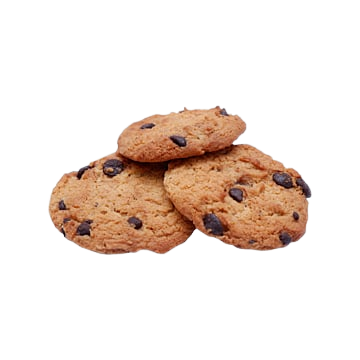

Cookies

4 pessoas
60 minutos

Ingredientes:
- Meia xícara (chá) de manteiga derretida (100 g)
- Meia xícara (chá) de açúcar mascavo
- 3 colheres (sopa) de açúcar
- 1 ovo
- Meia colher (chá) de essência de baunilha
- 1 xícara (chá) de farinha de trigo
- Meia colher (chá) de fermento em pó
- 100 g de Gotas de Chocolate ao Leite
Passo a Passo:
- Em um recipiente, misture bem com uma colher ou fuê a manteiga, o açúcar mascavo, açúcar, o ovo e a essência de baunilha até obter uma mistura cremosa e clara. Acrescente a farinha de trigo, o fermento em pó e metade das Gotas de Chocolate ao Leite.
- Leve à geladeira por 10 minutos.
- Modele os cookies com o auxílio de 2 colheres e coloque em uma assadeira, deixando um espaço entre eles.
- Finalize com as Gotas de Chocolate restantes e leve ao forno médio (180°C), preaquecido, por cerca de 12 minutos ou até dourar levemente nas laterais.